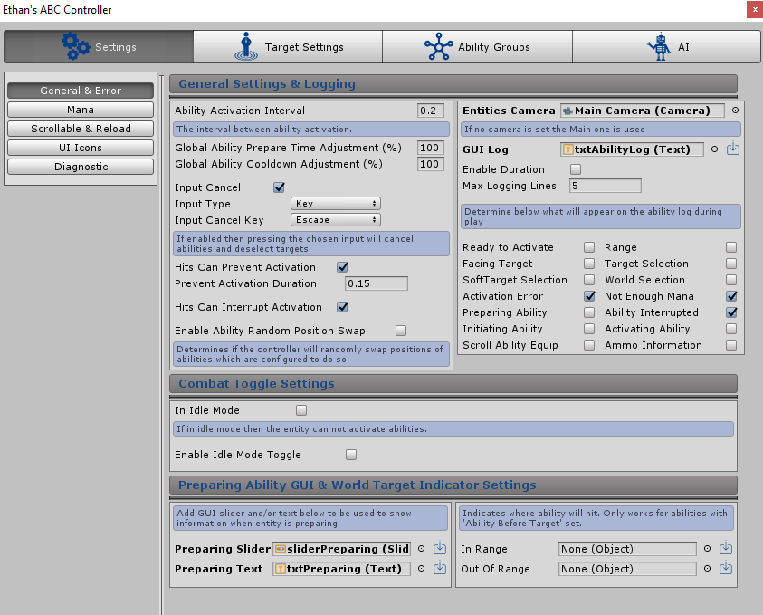

General & Stats
Overview
Below details the general config relating to the entity can be setup like extra tagging used by the system, stat creation and GUI logging.

ABC Tags
ABC Tags is an additional tagging system similar to the tag system in Unity. Both ABC tags and Unity tags are used by functionality across the system when checking against certain conditions. An example of this is creating an effect that only applies to entities with an “Enemy” tag. There is never the circumstance where an ABC tag will just be checked over the normal Unity tag. Both are checked on every instance.
There is no limit to the amount of ABC Tags that can be added. Clicking the “+” sign will create a new text box to allow for text to be entered. You can then easily delete a tag by clicking the “x” or change the ordering with the arrow keys.
Ignore All Ability Collision
If enabled then the entity will ignore all ability collisions no matter the circumstance. This setting can also be applied for a duration using the “Toggle Ignore Ability Collision” Effect. LINK TO EFFECT PAGE
Block Duplicate Effect Activation
If enabled then the entity can not have the same ability effects from the same originator applied more than once.
Block Surrounding Object Status
If enabled then the entity can never be used as a surrounding object. Surrounding objects are essentially GameObjects which will travel with the ability, explained further here: Include Surrounding Objects.
Hits Can Stop Movement
If enabled then the entities movement can be stopped after being hit (from a correctly setup effect being applied). If disabled then movement can never be stopped by a hit. If the box is ticked then the following additional settings will appear:
-
Stop Movement Duration
-
A float number can be entered here to determine how long the entities movement is stopped for
-
Freeze Position
-
If enabled then the entity will be frozen in place by the current transform position being frozen.
This is done by temporarily adding the ABC_FreezePosition script. This script works by keeping the
transform position the same as when the component was added and also keeping the rigidbody velocity at
0 if the component exists on the entity
-
Disable Components
-
If enabled then general unity movement components will be disabled and then re-enabled
after the “Stop Movement Duration”. This is done by temporarily adding the ABC_DisableMovementComponents
script which covers such components as navagent, character controller, rigidbody and more.
On top of the above settings a delegate event will also be raised when the movement is either enabled or disabled which can be connected to from any script. This way any movement scripts outside of the system can execute methods when a call to stop movement has been made by ABC.
Code example to subscribe to the event delegate:
private void OnEnable() {
this.movementEventsABC = meTransform.GetComponentInChildren<ABC_StateManager>();
//subscribe to the event
if (this.movementEventsABC != null) {
this.movementEventsABC.onEnableMovement += this.EnableMovement;
this.movementEventsABC.onDisableMovement += this.DisableMovement;
}
}
public void EnableMovement() {
//Code to enable movement
}
public void DisableMovement() {
//Code to disable movement
}
private void OnDisable() {
if (this.movementEventsABC != null) {
this.movementEventsABC.onEnableMovement -= this.EnableMovement;
this.movementEventsABC.onDisableMovement -= this.DisableMovement;
}
}
Effect GUI Log
This setting requires an Unity text object which can be created from the Unity menu: GameObject > UI > Text. This object can be placed anywhere on the screen and will display all effect text which has been set up to show when an effect is applied to an entity, more detail on setting up effect applied text can be found here: Effect Log
If the load default icon is clicked then the ABC_GUI default prefab will be added to the Hierarchy and the txtEffectLog will be added to the setting. This example can be used, referenced or edited.
Graphic Log
This setting requires a canvas object with the render mode set to “World Space” which also includes a Text component in the object or any of its children. This is used to display effect text which has been setup to show when an effect is applied to an entity in the actual game as an object rather than on the UI. More detail on setting up effect applied text can be found here: Graphic Log .
An example of its use is to add damage bubbles which shows when an entity takes damage. More information on this can be found in Unity documentation by searching for “Creating a World Space UI”
If the load default icon is clicked then the ABC_EffectTextCanvas default prefab will be added to the setting. This example can be used, referenced or edited and includes a animation to have the text travel upwards and then fade out.
Entity Stats
Stats can be setup to change the ‘potency’ of effects on abilities. Detailed further by clicking the following link: Modify Potency Using Stats. In a nutshell the ‘potency’ of the effect can be adjusted by both the ability originator stats and the entities stats the effect is being applied on.
An example of use is to setup an Attack stat which affects the potency of an attack and a defence stat which lowers the potency of an incoming attack
Stats can be added by clicking the “+ Add Stat” button and removed by clicking the red ‘x’. Once a stat is added the following settings appear:
-
Stat Name
-
The name of the stat in text, the same text will need to be typed later when setting up effects
which have its potency change depending on stats
-
Stat Value
-
This setting requires a float details configures the current value of the stat. This value can be adjusted using effects.
By clicking the More Settings toggle further settings appear:
-
Text Stat Name
-
This setting which requires a Unity text object which can be created from the Unity menu: GameObject > UI > Text.
This object can be placed anywhere on the screen and will display the name of the Stat
-
Text Stat Value
-
This setting which requires a Unity text object which can be created from the Unity menu: GameObject > UI > Text.
This object can be placed anywhere on the screen and will display the current value of the Stat
-
Only Show Text When Selected
-
If enabled then the Text objects displaying the name and value will only appear if the entity is currently targeted.